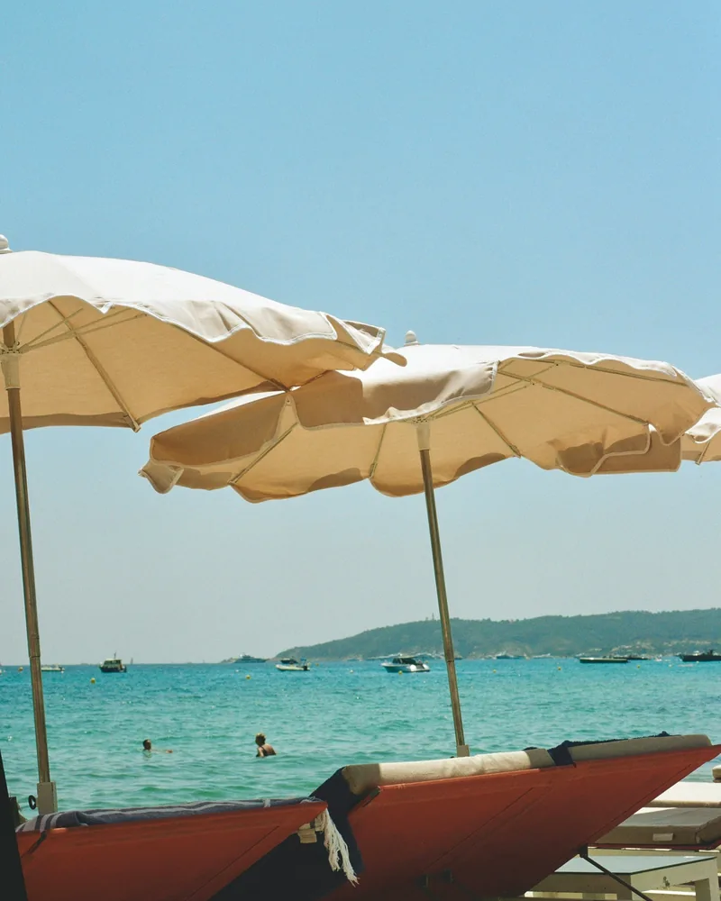
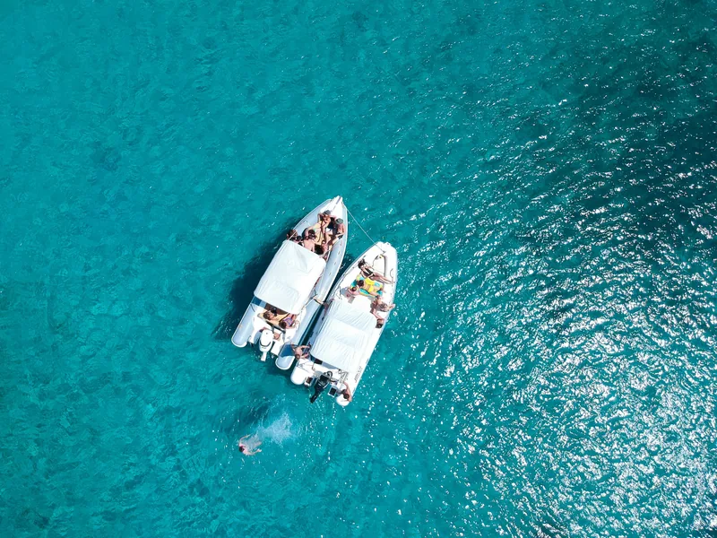

France and Andorra share about 57 km of border, which makes it France’s third shortest, after Monaco and the Dutch half of Saint Martin. Almost all of it runs along high ridges, and only one road crosses it, at Pas de la Casa, close to 2,000 m up. Yet France matters to Andorra far more than that short line suggests: its president is one of the country’s two heads of state.
Why the French president is a prince of Andorra
When Andorra’s two lords agreed to share it in 1278, one of them was the Count of Foix, whose castle still stands over the Ariège, an hour and a half’s drive from Andorra la Vella. His rights passed by marriage and inheritance to Henry of Navarre, who became King of France in 1589, and an edict of 1607 made the French head of state co-lord of Andorra alongside the Bishop of Urgell. Apart from a break after the Revolution, kings, emperors and presidents have held the title ever since, and under the 1993 constitution the President of the French Republic remains co-prince, with a representative in Andorra la Vella. The whole chain is in our short history of Andorra.
France is in daily life here too. La Poste runs one of Andorra’s two postal services, side by side with Spain’s Correos, and letters within Andorra go free. There’s a whole French school system too, free and public, which teaches 3,149 pupils in 2026–27, and its lycée, the Lycée Comte de Foix, had a record 1,654 students in 2025–26. Some 4,263 French nationals live in Andorra, and French is widely understood in shops, above all in Pas de la Casa. More in Catalan, Spanish or French?
Crossing at Pas de la Casa
The only road crossing is just east of Pas de la Casa, where the CG-2 becomes France’s N22 and drops down the Ariège valley. You can reach it over the Port d’Envalira, at 2,408 m, or through the Envalira tunnel, which needed a small treaty of its own: in 2001 France and Andorra swapped two plots of land of 15,925 m² each, so that Andorra could build the viaduct linking the tunnel to the N22. As on the Spanish side, it’s a real frontier, with Andorran and French posts, so carry your passport; the Andorran post may stamp it if you ask.
In winter this is the higher and harder way in. Check the snow phases and the tunnel before you set off (see driving in Andorra), and for the full route from the airport see Toulouse to Andorra. There’s no railway into Andorra, but the nearest station, L’Hospitalet-près-l’Andorre, is a few kilometres down the N22, on the line from Toulouse to Latour-de-Carol.
Just across: L’Hospitalet, Ax-les-Thermes and the Ariège
Below the border the road follows the young Ariège river past L’Hospitalet to Ax-les-Thermes, a spa town about an hour from Andorra la Vella. Some 60 hot springs rise there at between 18 and 78°C, and in the middle of town the Bassin des Ladres, a stone basin of water at 77°C, was built in 1260 by Roger IV, Count of Foix, father of the count who signed Andorra’s first Pareatge. The town’s own ski area, Ax 3 Domaines, is on the mountain above. Further down the valley, the castle of Foix keeps watch over the old county town.
From L’Hospitalet, the N20 climbs over the Col de Puymorens, or through its tunnel, to Porté-Puymorens and the Cerdanya, for Font-Romeu and the markets of Bourg-Madame and Saillagouse: see markets over the border. For bigger days out, from Carcassonne to Toulouse, see day trips from Andorra and Perpignan and Carcassonne.

France on a plate
Pas de la Casa, right on the border, is the most French corner of Andorra. But France itself is a map of regional food like no other. Here are nineteen of its best known dishes, cheeses and wines, and where they come from; the cassoulet of Castelnaudary and the anchovies of Collioure are the closest to Andorra.
Choose any number or picture on the map to read more.
- Normandy Camembert de Normandie, cider and Calvados, the apple brandy.
- Brittany Savoury galettes of buckwheat, sweet crêpes, and butter with salt in it.
- Épernay The sparkling wine, from the vineyards around Épernay and Reims.
- Strasbourg Choucroute garnie, sauerkraut piled with sausages and pork, and flammekueche, a thin tart of cream, onion and bacon.
- Dijon The mustard that bears the city’s name, and boeuf bourguignon, beef braised in the region’s red wine.
- Bresse Poulet de Bresse, with its blue feet, white feathers and red comb, and an appellation of its own.
- Lyon Quenelles, poached dumplings of pike, served in the city’s bouchons.
- Annecy Tartiflette, potatoes baked with reblochon, bacon and onion, and fondue in the ski resorts.
- Marseille Bouillabaisse, the fishermen’s stew of rockfish, served with rouille.
- Nice Socca, a thin chickpea pancake baked in a wood oven, and salade niçoise.
- Corsica Brocciu, a fresh ewe’s or goat’s milk whey cheese, and the island’s chestnut flour.
- Roquefort The blue ewe’s milk cheese, aged in the caves of Roquefort-sur-Soulzon.
- Castelnaudary Cassoulet, white beans slow baked with confit duck and sausage, claimed by Castelnaudary, Carcassonne and Toulouse alike.
- Collioure Anchovies salted by hand in the little harbour town on the Roussillon coast.
- Espelette The mild red chilli of the French Basque Country, hung to dry on house fronts, with Bayonne ham from just down the road.
- Bordeaux Red wine from the great châteaux, and canelés, small caramelised cakes flavoured with rum and vanilla.
- Périgord Black truffles, foie gras and walnuts in the markets of Sarlat.
- Le Puy Lentilles vertes du Puy, small green lentils grown on the volcanic soils of the Velay.
- Sancerre Crottin de Chavignol, small goat’s cheeses, beside the Sancerre vineyards on the Loire.

Checked November 2026 against the Andorra–France border and Ax-les-Thermes entries on Wikipedia, our history of Andorra, Alto’s reporting on the French school system, and Andorra’s Department of Statistics. The food map uses Natural Earth borders.